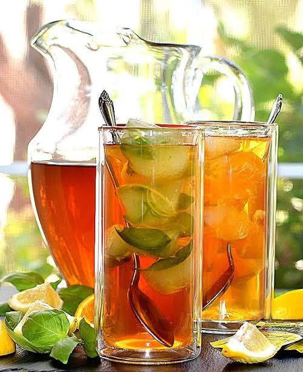
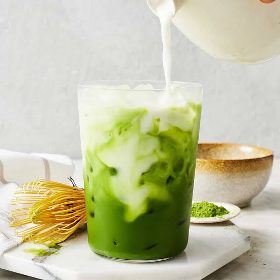

Iced Coffee
Rich and gooey molten chocolate cake served warm.

Lemonade
A delightful Italian dessert with layers of mascarpone and coffee-soaked biscuits.

Matcha Latte
Creamy vanilla-flavored Italian pudding, best served with fresh berries.